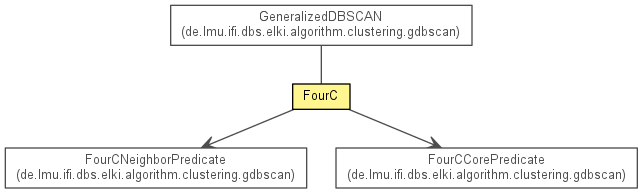

de.lmu.ifi.dbs.elki.algorithm.clustering.correlation
Class FourC<V extends NumberVector<V,?>>
java.lang.Object
 de.lmu.ifi.dbs.elki.algorithm.AbstractAlgorithm<R>
de.lmu.ifi.dbs.elki.algorithm.clustering.AbstractProjectedDBSCAN<Clustering<Model>,V>
de.lmu.ifi.dbs.elki.algorithm.clustering.correlation.FourC<V>
de.lmu.ifi.dbs.elki.algorithm.AbstractAlgorithm<R>
de.lmu.ifi.dbs.elki.algorithm.clustering.AbstractProjectedDBSCAN<Clustering<Model>,V>
de.lmu.ifi.dbs.elki.algorithm.clustering.correlation.FourC<V>
- Type Parameters:
V - type of NumberVector handled by this Algorithm
- All Implemented Interfaces:
- Algorithm, ClusteringAlgorithm<Clustering<Model>>, InspectionUtilFrequentlyScanned, Parameterizable
@Title(value="4C: Computing Correlation Connected Clusters")
@Description(value="4C identifies local subgroups of data objects sharing a uniform correlation. The algorithm is based on a combination of PCA and density-based clustering (DBSCAN).")
@Reference(authors="C. B\u00f6hm, K. Kailing, P. Kr\u00f6ger, A. Zimek",
title="Computing Clusters of Correlation Connected Objects",
booktitle="Proc. ACM SIGMOD Int. Conf. on Management of Data, Paris, France, 2004, 455-466",
url="http://dx.doi.org/10.1145/1007568.1007620")
public class FourC<V extends NumberVector<V,?>>- extends AbstractProjectedDBSCAN<Clustering<Model>,V>

4C identifies local subgroups of data objects sharing a uniform correlation.
The algorithm is based on a combination of PCA and density-based clustering
(DBSCAN).
Reference: Christian Böhm, Karin Kailing, Peer Kröger, Arthur Zimek:
Computing Clusters of Correlation Connected Objects.
In Proc. ACM SIGMOD Int. Conf. on Management of Data, Paris, France, 2004.
|
Field Summary |
private static Logging |
logger
The logger for this class. |
| Methods inherited from class java.lang.Object |
clone, equals, finalize, getClass, hashCode, notify, notifyAll, toString, wait, wait, wait |
logger
private static final Logging logger
- The logger for this class.
FourC
public FourC(DoubleDistance epsilon,
int minpts,
LocallyWeightedDistanceFunction<V> distanceFunction,
int lambda)
- Constructor.
- Parameters:
epsilon - Epsilon valueminpts - MinPts valuedistanceFunction - Distance functionlambda - Lambda value
getLongResultName
public String getLongResultName()
- Description copied from class:
AbstractProjectedDBSCAN
- Return the long result name.
- Specified by:
getLongResultName in class AbstractProjectedDBSCAN<Clustering<Model>,V extends NumberVector<V,?>>
- Returns:
- Long name for result
getShortResultName
public String getShortResultName()
- Description copied from class:
AbstractProjectedDBSCAN
- Return the short result name.
- Specified by:
getShortResultName in class AbstractProjectedDBSCAN<Clustering<Model>,V extends NumberVector<V,?>>
- Returns:
- Short name for result
getInputTypeRestriction
public TypeInformation[] getInputTypeRestriction()
- Description copied from class:
AbstractAlgorithm
- Get the input type restriction used for negotiating the data query.
- Specified by:
getInputTypeRestriction in interface Algorithm- Overrides:
getInputTypeRestriction in class AbstractProjectedDBSCAN<Clustering<Model>,V extends NumberVector<V,?>>
- Returns:
- Type restriction
getLogger
protected Logging getLogger()
- Description copied from class:
AbstractAlgorithm
- Get the (STATIC) logger for this class.
- Specified by:
getLogger in class AbstractAlgorithm<Clustering<Model>>
- Returns:
- the static logger